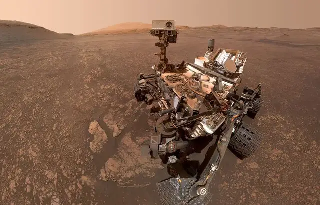

Curiosity : Pour ses dix ans sur Mars, le petit robot part explorer une nouvelle région

Sur un rythme moins soutenu que par le passé, afin de ménager ses capacités, le robot s’avance vers une vallée large de 800 m, au fond de laquelle les scientifiques pensent entrevoir les vestiges d’un canal. « On se demande si ce n’est pas l’un des derniers écoulements sur Mars », explique Olivier Gasnault, scientifique responsable France de ChemCam, un instrument franco-américain embarqué sur Curiosity. « Cette zone, qu’on voit beaucoup sur Mars, marque une transition climatique vers l’aridité et l’assèchement qu’on connaît désormais », ajoute-t-il.
« La principale conclusion qu’on peut tirer des études menées par Curiosity, et c’était l’un des objectifs de la mission, c’est que Mars fut habitable pour une forme de vie simple », se réjouit Valérie Mousset, cheffe de projet du « Mars Science Laboratory » (MSL) et Curiosity au Centre national d’études spatiales (CNES) de Toulouse. « Il y avait de l’eau liquide et stable, et la présence des molécules nécessaires à la vie microbiologique », ajoute-t-elle.
« Curiosity a permis un changement d’échelle dans l’exploration planétaire, en amenant un petit laboratoire sur place, mais aussi d’établir des stratégies et de se poser les bonnes questions pour les prochaines missions », expliquait Olivier Gasnault dans les locaux de CNES, quelques jours avant le dixième anniversaire de l’atterrissage du robot. Le scientifique cite l’exemple de SuperCam, un autre outil construit avec la participation du CNES « grâce à tout ce qu’on a appris pour en faire un instrument meilleur ». Cet appareil embarqué par Perseverance, le dernier rover arrivé sur Mars en 2021, est capable d’analyser les éléments chimiques susceptibles de former des minéraux mais a pu aussi enregistrer les premiers sons martiens en mai 2021, tout en conservant une forte maniabilité.
04/08/22 à 13h02